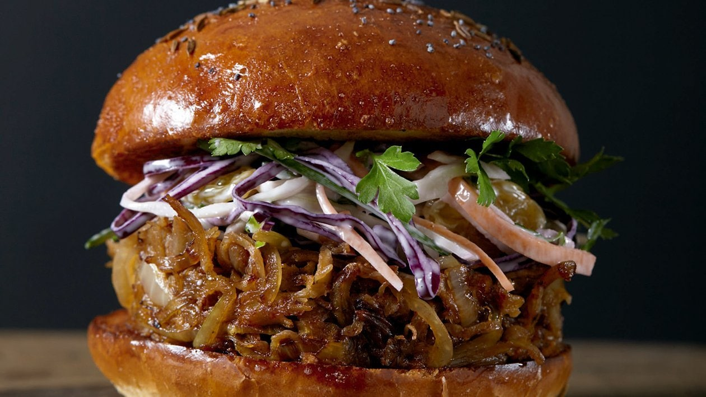

Nuestro Menu!
¡Bienvenido a StreetFood! Descubre un festín de sabores con nuestro delicioso menú de recetas protagonizadas por la suculenta carne desmechada. Desde tacos irresistibles hasta platos gourmet, cada opción está cuidadosamente preparada para ofrecerte una experiencia culinaria única. Utilizamos ingredientes frescos y de alta calidad para asegurar que cada bocado sea una explosión de sabor. ¡Sumérgete en nuestro mundo gastronómico y disfruta de la perfecta combinación de tradición y creatividad en cada plato

Sandwich de Carne mechada al bonarda
- Carne de ternera previamente cocinada y mechada, terminada en planca
- Vino Bonarda
- Repollo y cebolla caramelizada
- Pan de papa 14cm

Tacos hot!
- Carne de ternera previamente cocinada y mechada, terminada en planca
- Vino Bonarda
- Vegetales salteados

Burger americana en pan de papa y parmesano
- Cuarto de ternera
- Queso cheddar
- Cebolla caramelizada
- Paceta

Papas cheddar al verdeo a caballo
- Papas Simplto Crunch
- cheddar Liquido
- Cebolla al verdeo
- Huevos